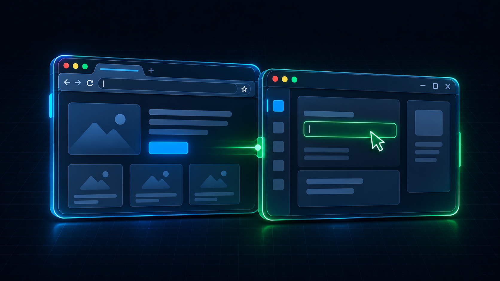
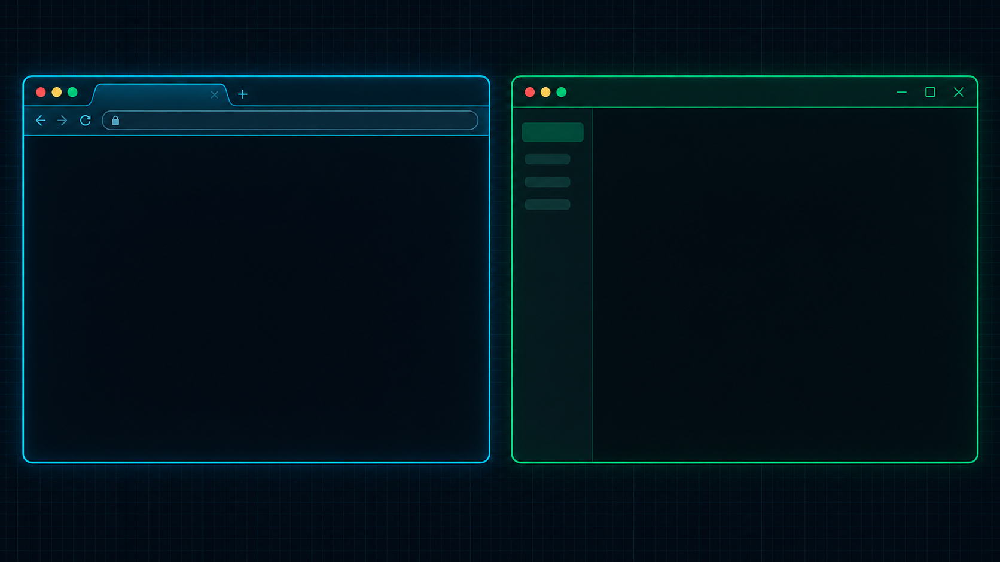
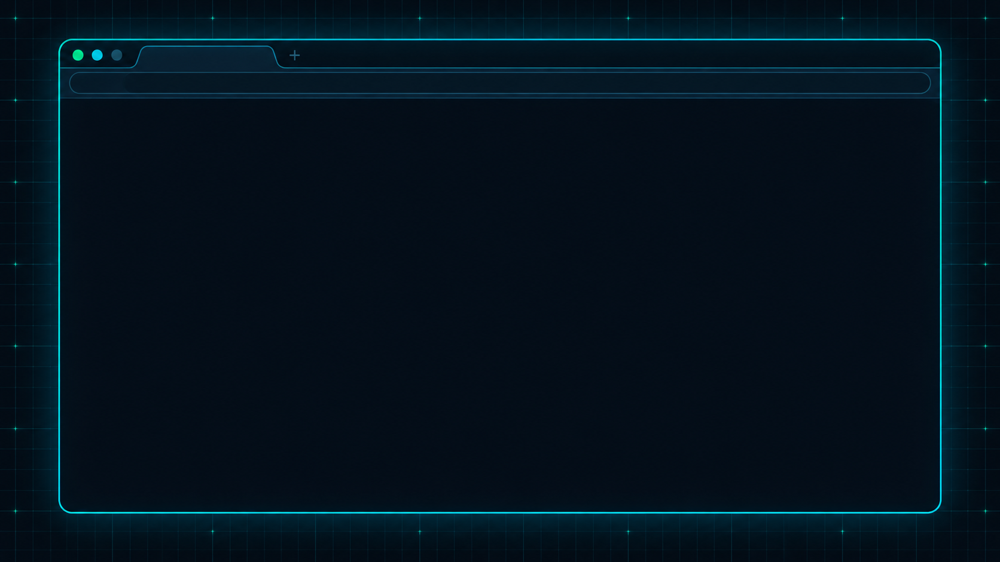
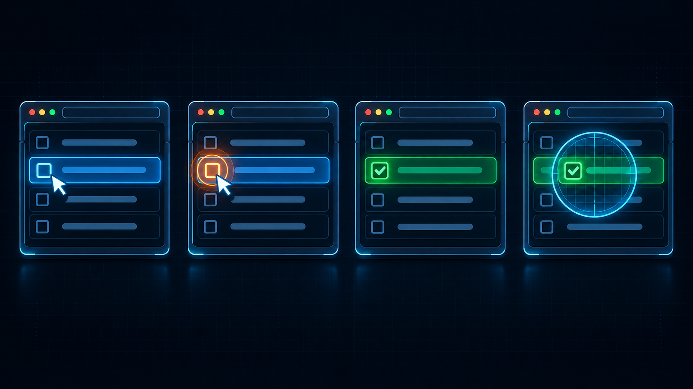
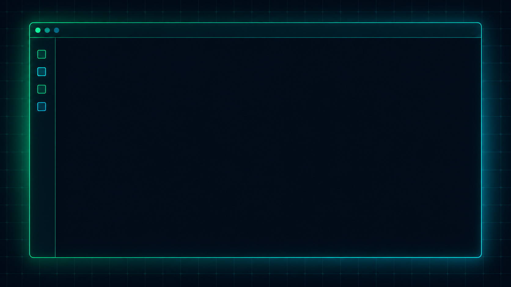
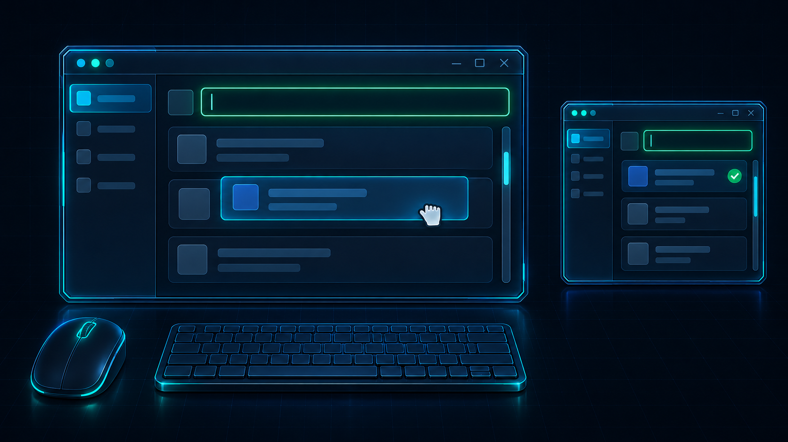
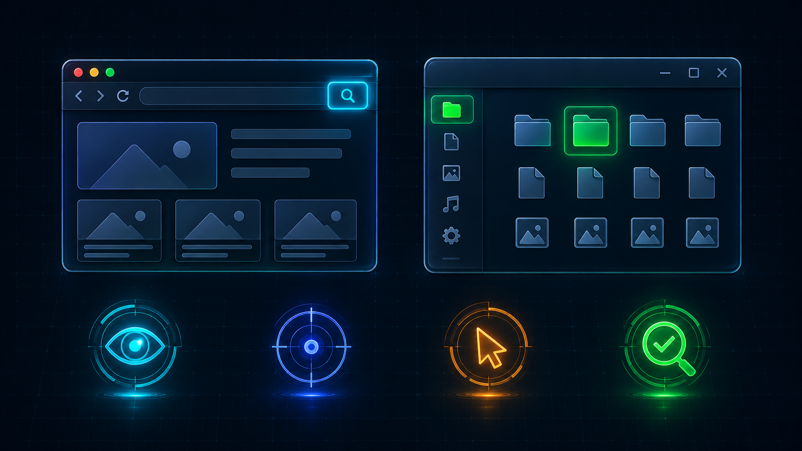

从零实现 Agent
01 / 10
● AGENT 进阶 · 第十期
Computer
Use
Agent 如何看懂并操作电脑

// THIS EPISODE
01
为什么需要
需求与分类依据
02
浏览器控制
网页信息、定位与执行
03
桌面控制
截图、控件与系统输入
04
本期总结
操作之后，重新观察
10 页 · 12 分钟
// 第十期 · 为什么需要 Computer Use？
从零实现 Agent
02 / 10
为什么需要
Computer Use？
很多任务仍在网页和
软件界面里完成，
现成工具接口不一定
覆盖这些操作。
软件界面里完成，
现成工具接口不一定
覆盖这些操作。
Computer Use 让 Agent
读取界面，并调用工具
执行操作。
读取界面，并调用工具
执行操作。
用户目标
Agent
网页与应用窗口
机制示意 · 非真实软件截图
// 第十期 · 为什么分成浏览器与桌面控制？
从零实现 Agent
03 / 10
为什么分成浏览器与桌面控制？
操作环境不同，能获取的信息与执行通道也不同

浏览器控制
网页中的内容与元素
网页结构
浏览器控制通道
浏览器控制通道
桌面控制
应用窗口与系统界面
截图、系统控件
系统输入 / 控件动作
系统输入 / 控件动作
两者可以结合，浏览器窗口也能通过桌面方式操作。
机制示意 · 非真实软件截图
// 第十期 · 浏览器：Agent 能获得什么信息？
从零实现 Agent
04 / 10
浏览器：Agent 能获得什么信息？
网页
工具提取
模型收到的信息

内容
继续
DOM
网页的文档结构
无障碍信息
控件的名称、角色
与状态
与状态
输入框：内容
可编辑
可编辑
按钮：继续
当前可用
当前可用
可能是整理后的文字结构，也可能包含截图。
机制示意 · 非真实软件截图
// 第十期 · 浏览器：怎样找到具体元素？
从零实现 Agent
05 / 10
浏览器：怎样找到具体元素？
内容
继续
模型选定目标
名称：继续
角色：按钮
状态：可用
角色：按钮
状态：可用
工具匹配当前页面元素
名称、角色、文字都能帮助定位；也可以结合截图。
机制示意 · 非真实软件截图
// 第十期 · 浏览器：动作怎样到达网页？
从零实现 Agent
06 / 10
浏览器：动作怎样到达网页？
模型选择动作
浏览器工具执行
页面响应
读取新状态

✓
✓
目标 + 点击
调用控制通道
未选中变为选中
读回：已选中
点击 · 填写 · 选择 · 滚动 · 导航
执行成功，还要检查页面结果。
机制示意 · 非真实软件截图
// 第十期 · 桌面：怎样从截图找到位置？
从零实现 Agent
07 / 10
桌面：怎样从截图找到位置？
截取当前画面
识别目标
确定操作位置

内容
x
y
0
目标中心 (x, y)
基于当前截图
窗口或布局变化后
重新观察定位
重新观察定位
收到图片且具备视觉能力，模型才能理解画面。
机制示意 · 非真实软件截图
// 第十期 · 桌面：除了截图，还能怎样定位？
从零实现 Agent
08 / 10
桌面：除了截图，还能怎样定位？
系统无障碍接口，让工具读取应用提供的控件信息
内容
继续
应用
窗口
输入框
按钮
名称：继续 角色：按钮
状态：可用 动作：按下
状态：可用 动作：按下
可读信息与可用动作，取决于应用和工具。
机制示意 · 非真实软件截图
// 第十期 · 桌面：鼠标和键盘怎样控制应用？
从零实现 Agent
09 / 10
桌面：鼠标和键盘怎样控制应用？
坐标目标
系统鼠标 / 键盘输入
应用响应
控件目标
控件动作接口
按下 / 设置值等

输入焦点
文字
1 点击输入框
2 确认焦点
3 输入文字
文字
4 重新观察
文字
✓
滚动或拖动可能改变界面；执行后重新观察。
机制示意 · 非真实软件截图
// 第十期 · 本期总结
从零实现 Agent
10 / 10
本期总结

浏览器控制
桌面控制
页面元素 / 画面 → 浏览器工具
坐标 / 系统控件 → 桌面工具
观察
定位与判断
执行
再观察
动作执行成功，还要确认任务结果。
完成则结束，否则继续。